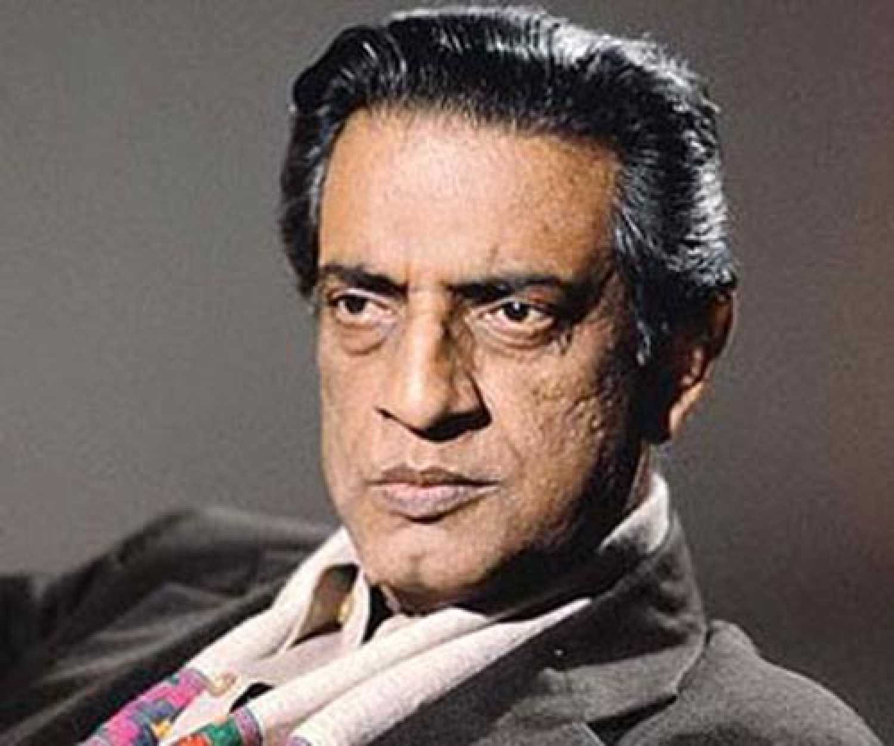

Satyajit Ray
1921-1992
Indian Filmmaker

Satyajit Ray (2 May 1921 – 23 April 1992) was an Indian film director, scriptwriter, documentary filmmaker, author, essayist, lyricist, magazine editor, illustrator, calligrapher, and music composer. Widely regarded as one of the greatest filmmakers in film history
About the legend
Early Life and Education
1921- Satyajit Ray was born to Sukumar Ray and Suprabha Ray in Calcutta(now Kolkata).Sukumar died when Satyajit was barely three, and the family survived on Suprabha Ray's meager income. He studied at Ballygunge Government High School in Calcutta, and completed his BA in economics at Presidency College.1940- He went to study at Visva-Bharati University in Santiniketan, founded by Rabindranath Tagore.In Santiniketan, Ray came to appreciate Oriental art. Where he learned much from the famous painters Nandalal Bose and Benode Behari Mukherjee. He later produced a documentary, The Inner Eye, about Mukherjee. His visits to Ajanta, Ellora and Elephanta stimulated his admiration for Indian art.
1943- Started working at D.J. Keymer, a British advertising agency, as a junior visualiser.Later, Ray worked for the Signet Press, a new publisher started by D. K. Gupta, who asked Ray to create book cover designs for the company. Ray designed covers for many books, including Jibanananda Das's Banalata Sen, and Rupasi Bangla, Bibhutibhushan Bandyopadhyay's Chander Pahar, Jim Corbett's Maneaters of Kumaon, and Jawaharlal Nehru's Discovery of India. He worked on a children's version of Pather Panchali, a classic Bengali novel by Bibhutibhushan Bandyopadhyay, renamed as Aam Antir Bhepu (The mango-seed whistle). Designing the cover and illustrating the book, Ray was deeply influenced by the work. He used it as the subject of his first film, and featured his illustrations as shots in his ground-breaking film.
1947- Along with Chidananda Dasgupta and others, Ray founded the Calcutta Film Society.They screened many foreign films, many of which Ray watched and seriously studied.
1949- In 1949, Ray married Bijoya Das, his first cousin and long-time sweetheart.The couple had a son, Sandip Ray, a film director.
Film Career
1950-1959- After being "deeply moved" by Pather Panchali,Ray decided to adapt it for his first film. Pather Panchali is a semi-autobiographical novel describing the maturation of Apu, a small boy in a Bengal village.This years are known as "The Apu Years".Ray's international career started in earnest after the success of his next film, the second in The Apu Trilogy, Aparajito (1956)He finished the last of the trilogy, Apur Sansar (The World of Apu) in 1959.1959-1964(From Devi to Charulata)- Ray followed Apur Sansar with 1960's Devi (The Goddess), a film in which he examined the superstitions in Hindu society.
In 1961, on the insistence of Prime Minister Jawaharlal Nehru, Ray was commissioned to make Rabindranath Tagore, based on the poet of the same name, on the occasion of his birth centennial, a tribute to the person who likely most influenced Ray.
In 1962, Ray directed Kanchenjungha, Based on his first original screenplay, it was also his first colour film.
In 1964, Ray directed Charulata (The Lonely Wife); one of Ray's favourite films, it was regarded by many critics as his most accomplished.
Literary Works
Ray created two popular fictional characters in Bengali children's literature—Feluda, a detective, and Professor Shonku, a scientist.Ray also wrote a collection of nonsense verse named Today Bandha Ghorar Dim, which includes a translation of Lewis Carroll's "Jabberwocky".
He wrote a collection of humorous stories of Mullah Nasiruddin in Bengali.